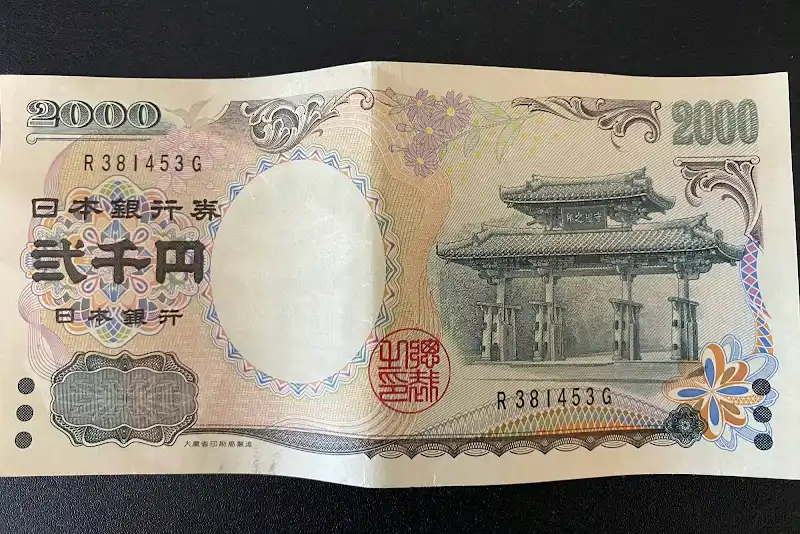

冷知识：2000日元纸币在日本很少流通。据说，它在日本全国的流通比例不到 0.5%～1%，因此甚至有不少人从未一睹其真容。
如果你想相对容易地拿到2000日元纸币，有没有办法？有的兄弟，有的。那就是去沖縄（おきなわ）。
因为2000日元纸币上印有冲绳的首里城，再加上冲绳县曾经积极推动使用，所以至今在当地仍有一定程度的流通。
据说，在冲绳，诸如冲绳银行、琉球银行这样的当地银行的部分ATM设有“2000日元优先”按钮，只要按下去，就会优先吐出2000日元纸币。
所以，如果你去日本旅游，想实际拿到2000日元纸币，最理想的做法就是前往冲绳，然后找支持国际信用卡的冲绳地方银行ATM，在上面提取
如果你想相对容易地拿到2000日元纸币，有没有办法？有的兄弟，有的。那就是去沖縄（おきなわ）。
因为2000日元纸币上印有冲绳的首里城，再加上冲绳县曾经积极推动使用，所以至今在当地仍有一定程度的流通。
据说，在冲绳，诸如冲绳银行、琉球银行这样的当地银行的部分ATM设有“2000日元优先”按钮，只要按下去，就会优先吐出2000日元纸币。
所以，如果你去日本旅游，想实际拿到2000日元纸币，最理想的做法就是前往冲绳，然后找支持国际信用卡的冲绳地方银行ATM，在上面提取
